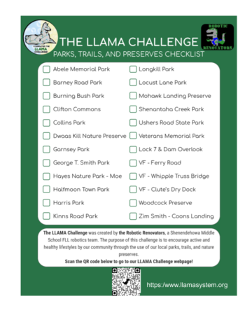

* The cost for the patch is $5 which covers shipping. Payment can be made via venmo. Once you have logged 20 parks, request your patch and payment info by emailing your name, the email address you checked in with, and your mailing address to llamasystem@gmail.com.
| Initials | Date Completed | Comments |
|---|---|---|
| David Fronk | 4/22/2025 | As of April 22, 2025 David Fronk completed the LLAMA Challenge. Thank you David for exploring our local treasures. |
| Ann Marie Davis | 5/4/2023 | As of May 4, 2023 Ann Marie Davis completed the LLAMA Challenge. Thank you Ann Marie for exploring our local treasures. |
| Alyvia, Von, Emma, Matthew, Aurelia, Dorothy, Ronan, Evelyn, and Juno | 4/6/2023 | As of April 6, 2023 our youngest finishers to date completed the Llama Challenge. Congratulations to all of you for visiting our trails, preserves, and parks. |
| Frank Schroeder and Haley Milos | 7/11/2022 | As of July 11, 2022 Frank Schroeder and Haley Milos, both from Troy, NY visited 20 of the 24 locations. Thank you both for exploring our local treasures. |
| Paul Myers | 12/20/2021 | As of December 20, 2021 Paul Myers visited 20 of the 24 locations. Thank you Paul for exploring our local treasures. |
| Sharon Mahoney | 12/3/2021 | As of December 3, 2021 Sharon Mahoney visited 20 of the 24 locations.Thank you Sharon for exploring our local treasures. |
| Melissa Donovan | 9/5/2021 | As of September 5, 2021 Melissa Donovan visited 20 of the 24 locations. Quote from Melissa's almost 5 year old daughter and trailblazer - “Thank you for having the program. "I can’t wait to get my badge." Thank you both for exploring our local treasures. |
| Amy Flood | 8/23/2021 | As of August 23, 2021 Amy Flood, Town of Clifton Park Councilwoman visited 20 of 24 parks. Quote from Amy - "I am very proud of the Shenendehowa Robotics Team for developing the LLAMA Challenge. I really enjoyed visiting all the beautiful parks that Clifton Park and Halfmoon have to offer. It was fun to visit each location and easy to submit the QR code’s to the Robotics Team. I hope many residents get out to enjoy the work put into their project." Thank you for taking the LLAMA Challenge and for making Clifton Park a wonderful place to live. |
| JPCD (Jennifer) | 7/29/2021 | As of July 29,2021 JPCD (Jennifer) visited 20 of the 24 parks listed on the LLAMA Challenge page. Quote from Jennifer "I enjoyed this challenge as it was a great way to explore and get to know the Clifton Park area. I especially enjoyed the locks/parks in the Vischer Ferry portion of the challenge. It was great seeing people out and about at all of the stops enjoying the great outdoors! Looking forward to the next one!" Jennifer, thank you for the feedback and congratulations on completing our first challenge. Stay tuned for another challenge to be announced by the end of the summer 2021. |
| AC (Al) | 7/28/2021 | On July 28,2021 AC (Al) completed all 24 parks, trails and preserves listed for the LLAMA Challenge page. Quote from Al: "The Llama Challenge is a wonderful way to explore and become better acquainted with the wonderful park system we have. We will certainly be returning to many of the areas we visited for further exploration while enjoying the scenery, the free exercise and fresh air." Al, thank you for the feedback and congratulations on completing our first challenge. |
| JL and VFL | 5/7/2021 | As of May 7, 2021 JL and VFL are the first people to visit all 24 parks listed on the LLAMA Challenge page. Congratulations to our first finishers! |
Loading the leaderboard...
| Rank | Initials | Locations Visited | Last Check-in |
|---|
